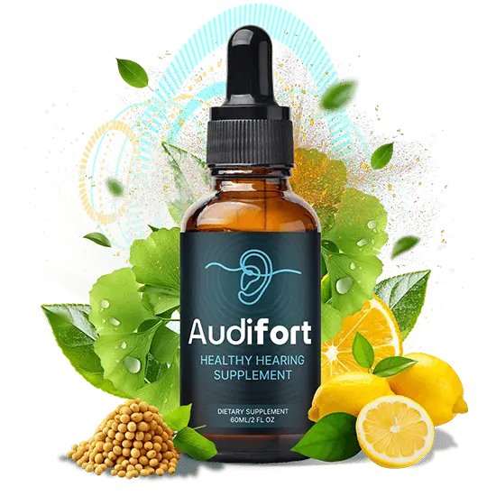
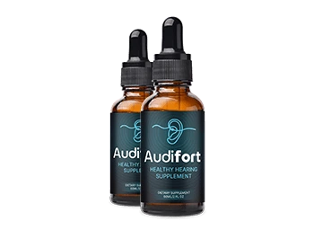
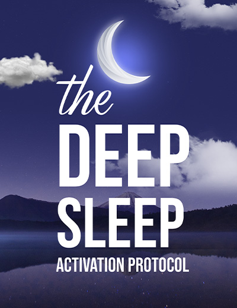

Liquid drops · 30 mL bottle · Adults 18+ · 1 or 2 droppers a day
Audifort: A Daily Liquid Dropper Marketed To Support Healthy Hearing And Everyday Ear Wellness
Audifort is a dropper supplement for adults who like a simple morning habit alongside proper hearing care. You shake the bottle, take one or two droppers and swallow, with no capsule. The seller presents it as support for healthy hearing, and the bottle says "Supports Healthy Hearing". We read the label more closely: it is not a hearing aid, it does not treat or reverse hearing loss or ringing in the ears, no ingredient on it is a recognized hearing nutrient, and no result is promised. Sudden hearing loss needs a doctor the same day, and a hearing test comes before any supplement. This page walks through the label, shows who must ask a pharmacist first, gives the one price we can verify and lays out the 90-day refund steps.*
- One or two droppers a day, no capsule
- A bottle label to read item by item
- Safety notes for sudden hearing loss and ringing
- A 90-day guarantee, subject to the seller's terms
- 1Testget a hearing test first
- 2Checkyour medicines with a pharmacist
- 3Shakethe bottle well
- 4Takeone dropper in the morning
| Sudden hearing loss? | See a doctor today |
| Ringing in one ear? | Read this |
| On diabetes or blood-pressure medicine? | Ask first |
Secured payment • Encrypted checkout • 90-day guarantee
Related: Hearing claims we skip · FAQ · The blog
*These statements have not been evaluated by the Food and Drug Administration. This product is not intended to diagnose, treat, cure or prevent any disease.

An animated teaching sketch, not data. Illustration.
At A Glance
What The Audifort Seller Says About Quality
These are the seller's statements, reported as stated.

Made In The USA
The label adds "with globally sourced ingredients".

GMP Practice
Good Manufacturing Practice, per the brand.

Plant-Based Blend
The seller's wording, not a certification.
- FDA registered site
Facility Note
Not an FDA approval of the product.
The seller's page labels one of these "FDA Approved". The FDA does not approve dietary supplements, so no such seal appears here. See the quick answers and the hearing claims we skip.
Test your hearing first, then read the checkout.
90-day guarantee · Buying checklist · Bundle prices
What Is It
What Is Audifort, As Shown On The Bottle And Page?
Audifort comes in an amber glass bottle with a dropper and a dark label showing an ear outline and the words "Supports Healthy Hearing", 30 mL (1 fl oz).*
The label shows 1 mL servings, 30 per bottle, 0.7 mcg of chromium and one 200 mg proprietary blend of 22 botanicals and amino acids. The seller's page says "20+ components" and highlights six, so we follow the label.
It is a dietary supplement for adults: not a drug, not a hearing aid, not FDA approved and not a treatment for hearing loss or tinnitus.
Related: The label ingredients · What a blend hides · What studies say
Read The Ingredients
Seller artwork, as supplied.
Pricing
Audifort Prices: The 6 Bottle Pack Is $49 A Bottle
Three packs, with free US shipping on qualifying six bottle orders.
Starter

- 60 days at 1 dropper a day
- Price shown at checkout
- 90-day guarantee, subject to terms
Popular
- 90 days at 1 dropper a day
- Price shown at checkout
- 90-day guarantee, subject to terms
Best Value
- 180 days at 1 dropper a day
- Free US shipping, qualifying
- Two digital extras offered
- 90-day guarantee, subject to terms
The seller also shows "Regular price $99", "Save 87%" and "Only for today", none of which can be checked, and "87%" does not match $49 against $99, so we leave them out. 2 and 3 bottle prices are shown at checkout. Bundle prices · Buying checklist · Shipping info
guarantee
Ninety Days
Audifort's 90-Day Guarantee, Subject To Its Terms
The seller promotes a 90-day money-back guarantee for US customers, subject to its return terms, and names BuyGoods as the retailer. Check the refund policy for the exact requirements before you order.
Note the purchase date and set a reminder around day 75. A refund window is never a reason to delay a hearing test. See the refund policy and the ninety-day refund steps.
Check A Pack With A Guarantee The steps in detail →Extras
Audifort Bonus Titles: Two Offered, Reviewed
Digital reading with some orders, per the seller.

The other title, "The Brainwire Regeneration Blueprint", promises "regeneration", which hearing and nerve research does not support, so no cover is shown. See the bonus titles reviewed and bundle prices.
Related: Shipping info · Refund policy · Pregnancy and teens
How It Works
How Audifort Is Meant To Be Used: 1 Or 2 Droppers A Day
The label says: shake well before each use, take 1 or 2 droppers full daily, place it in the mouth and swallow, and do not exceed the recommended dose. The seller suggests mornings.*
- Get a hearing test before relying on any supplement.
- Read your own label, especially the blend and the cautions.
- Ask your pharmacist about your medicines.
- Shake, then take one dropper and see how you feel.
- Decide inside the 90-day window.
Related: The daily dropper routine · Hearing test first · How the ear hears
One dropper inside real hearing care. Illustration.
Days of use per pack. Illustration.
The seller's "how it works" story says the blend sends blood flow to the ears and protects them. No study shows that, so we do not repeat it. Why →
Ingredients
Inside Audifort: Chromium And A 22-Item Blend In Six Groups
What each group is and what to watch for. The label in detail →
The Label At A Glance
One named amount, one blend with no split.

| Audifort Supplement Facts, as printed on the bottle label | Detail |
|---|---|
| Serving size | 1 mL |
| Servings per container | 30 (30 mL, 1 fl oz bottle) |
| Chromium (as chromium picolinate) | 0.7 mcg (2% DV) |
| Proprietary blend | 200 mg per serving (Daily Value not established) |
| Blend contains | Maca root extract, grape seed extract, guarana seed extract, African mango seed extract, eleuthero root extract, astragalus root extract, green tea leaf extract, gymnema leaf extract, coleus forskohlii root extract, capsicum annuum fruit extract, grapefruit fruit extract, Panax ginseng aerial extract, raspberry ketones, L-glutamine, L-tyrosine, L-arginine base, beta-alanine, monoammonium glycyrrhizinate, GABA, L-ornithine HCl, L-tryptophan, L-carnitine base |
| Other ingredients | Glycerin, water, organic lemon extract, stevia extract 97% (Reb A), xylitol, sodium benzoate, potassium sorbate, citric acid, natural flavors |
How to read it: the seller web page says "20+ selected components" and highlights six, but the label lists 22 items in one 200 mg blend plus chromium. Twenty-two ingredients sharing 200 mg average about 9 mg each if split evenly, and the label does not give the split.
Directions (label): shake well before each use, take 1 or 2 droppers full daily, place in the mouth and swallow. Store away from heat, light and humidity. Do not exceed the recommended dose.
General evidence. Illustration.
A fair summary: no ingredient on the label is an established hearing nutrient, reviews find little proof that supplements improve hearing, and no trial of this liquid is known.* See the blog on maca, grape seed, green tea and gymnema.
Sudden hearing loss, or on diabetes or blood-pressure medicine? Ask first.
Honest information first · Sudden hearing loss · Interactions
Safety
Audifort Safety: Hearing Loss, Ringing, Caffeine, Licorice And Medicines
Six reasons to ask first.
Sudden Hearing Loss First
Sudden hearing loss in one or both ears needs a doctor the same day or the next, not a supplement. The blend also has caffeine sources, a licorice compound and grapefruit extract. Keep each prescription as your clinician set it. See sudden hearing loss and diabetes and medicine interactions.
Illustration.
Illustration.
A Drop Is Not Hearing Care
Hearing loss and ringing have causes a test can find. See a hearing test comes first.
| If you | Then |
|---|---|
| Lose hearing suddenly in one or both ears | See a doctor the same day. See sudden hearing loss. |
| Hear ringing in one ear, or pulsing ringing | See a doctor soon. See tinnitus and ear symptoms. |
| Have high blood pressure, a heart condition or caffeine sensitivity | Ask first. See caffeine, licorice and pressure. |
| Take diabetes, blood-thinning or antidepressant medicine | Ask first. See diabetes and medicines. |
| Are pregnant, nursing, under 18 or have a condition | Do not start without a doctor. See pregnancy, teens, conditions. |
| Have dizziness, ear pain with drainage, or weakness | Seek urgent care at once. |
See A Doctor Soon For
One-sided ringing, ringing that pulses, hearing loss with dizziness, ear pain, drainage, or any hearing change that is new.
Keep It Away From Dogs
The base contains xylitol, which is dangerous to dogs. Store the bottle out of reach of children and animals.
Illustration.
A trial window
A 90-day guarantee.
Illustrative emphasis, not measured.
Protection And Testing Carry The Weight
Hearing tests, hearing aids when needed and protection from loud noise do far more than any drop. See noise exposure and hearing protection and what Audifort aims to support.
Seller artwork: an illustration of listening, not a customer and not a result.
Choose Your Pack
Comparing Audifort Packs By Cost Per Day
The one price we can state is $49 a bottle on the 6 bottle pack.
Starter
- 60 days at 1 dropper a day
- Price shown at checkout
- 90-day guarantee, subject to terms
Popular
- 90 days at 1 dropper a day
- Price shown at checkout
- 90-day guarantee, subject to terms
Best Value
- 180 days at 1 dropper a day
- Free US shipping, qualifying
- Two digital extras offered
- 90-day guarantee, subject to terms
What the price shows. Illustration.
The Sums
Six bottles at $49 each are $294. At one dropper a day a bottle lasts about 30 days, so about $1.63 a day, and at two droppers about $3.27. The 2 and 3 bottle prices are shown at checkout. See bundle prices.
Start Small If Unsure
If you are unsure how the blend sits with your medicines, a smaller pack is the careful start. See the buying checklist and the refund steps.
Ninety days. Illustration.
Customer Reviews
Audifort Customer Reviews: Questions And Honest Answers
Individual buyers cannot be verified, so no star ratings, counts or named testimonials appear here. The seller's page prints three mild "reviews" with names and cities (Sarah M., Michael T., Jessica R.), none of which describes a hearing result, and we do not repeat them. No customer photos were supplied, so none are shown. Verified reviews will be added when they can be shown in full, critical ones included.
Does it really help hearing?
No supplement is proven to improve hearing, and no ingredient on this label is a recognized hearing nutrient. The seller itself says there is not enough independent clinical evidence.
Can it relieve my tinnitus?
Not on the evidence. Ringing has many causes that need finding, and caffeine sources in the blend can make it more noticeable for some people.
Is it safe with my medicines?
Ask first if you take diabetes, blood-pressure, blood-thinning or antidepressant medicine. The blend has caffeine sources, a licorice compound and grapefruit extract.
Send yours
Used Audifort? Email contact@audifort.com with your order number and an honest account, kind or critical. Verified reviews can appear here.
Common questions
Hearing, ringing, medicines and refunds. See the quick answers.
Solid facts
The label, the price and the refund steps are spelled out here and in the blog.
Questions
Audifort Questions, Answered Carefully
What is Audifort?
A 30 mL liquid dropper supplement marketed to support healthy hearing and ear wellness in adults.
What does the label list?
Chromium (as picolinate) 0.7 mcg and a 200 mg proprietary blend of 22 botanicals and amino acids per 1 mL serving.
The web page says 20+ components. Why 22?
The seller says "20+ selected components" and highlights six, while the label lists 22 items in the blend plus chromium. We use the label.
How do I take it?
Shake well, take 1 or 2 droppers full daily, place in the mouth and swallow.
Does it restore hearing or treat tinnitus?
No. No supplement is proven to restore hearing, and Audifort does not treat hearing loss or tinnitus.
Is it a hearing aid replacement?
No. It cannot replace hearing aids, a hearing test or professional hearing care.
Is it FDA approved?
No. Supplements are not. The label only mentions a facility registered with the FDA.
Who should ask a doctor first?
Anyone on diabetes, blood-pressure, blood-thinning or antidepressant medicine, or with a heart condition.
What does it cost?
The 6 bottle pack is $49 a bottle ($294) with free US shipping on qualifying orders. 2 and 3 bottle prices are shown at checkout.
Is it a subscription?
The seller presents it as a one-time purchase; confirm on the checkout page.
What is the guarantee?
A 90-day money-back guarantee, subject to the seller's return terms.
When should I see a doctor?
Straight away for sudden hearing loss, and soon for ear pain, drainage, dizziness or ringing in one ear.
From The Blog
The Audifort Notebook: Ten Linked Entries
How hearing works, what studies say, and each part of the blend.
How The Ear Hears, In Plain Words
The path of sound.
EvidenceWhat Studies Say About Hearing Supplements
Little proof.
HealthTinnitus: Causes And Care
What helps.
PreventionNoise Exposure And Hearing Protection
Protect hair cells.
IngredientsMaca Root: The Evidence
Energy, not ears.
IngredientsGrape Seed Extract: The Evidence
Antioxidant story.
SafetyGreen Tea And The Caffeine Load
And tinnitus.
IngredientsGymnema, And Why It Is Here
An odd fit.
IngredientsGABA By Mouth: What We Know
Debated.
LabelWhat A 200 mg Blend Of 22 Hides
About 9 mg each.
Ready When You Are
Start With A Hearing Test, Then Choose Audifort
One or two droppers a day, a full bottle label to read and a 90-day guarantee, from $49 a bottle on the 6 bottle pack. Order once you have had your hearing checked and compared the label with your own medicines, especially if you take diabetes, blood-pressure, blood-thinning or antidepressant medicine. See the buying checklist and bundle prices.
- A label with 22 items, not six
- No ingredient is a hearing nutrient
- Test your hearing first
- No promise of results
The Label
The Audifort Label Details, As Printed On The Bottle
Servings, chromium, the blend and the base. The ingredients →
| Audifort Supplement Facts, as printed on the bottle label | Detail |
|---|---|
| Serving size | 1 mL |
| Servings per container | 30 (30 mL, 1 fl oz bottle) |
| Chromium (as chromium picolinate) | 0.7 mcg (2% DV) |
| Proprietary blend | 200 mg per serving (Daily Value not established) |
| Blend contains | Maca root extract, grape seed extract, guarana seed extract, African mango seed extract, eleuthero root extract, astragalus root extract, green tea leaf extract, gymnema leaf extract, coleus forskohlii root extract, capsicum annuum fruit extract, grapefruit fruit extract, Panax ginseng aerial extract, raspberry ketones, L-glutamine, L-tyrosine, L-arginine base, beta-alanine, monoammonium glycyrrhizinate, GABA, L-ornithine HCl, L-tryptophan, L-carnitine base |
| Other ingredients | Glycerin, water, organic lemon extract, stevia extract 97% (Reb A), xylitol, sodium benzoate, potassium sorbate, citric acid, natural flavors |
How to read it: the seller web page says "20+ selected components" and highlights six, but the label lists 22 items in one 200 mg blend plus chromium. Twenty-two ingredients sharing 200 mg average about 9 mg each if split evenly, and the label does not give the split.
Directions (label): shake well before each use, take 1 or 2 droppers full daily, place in the mouth and swallow. Store away from heat, light and humidity. Do not exceed the recommended dose.
A dietary supplement cannot be FDA approved. Read the directions and warnings on your own bottle, and see the health disclaimer.
References
Independent Reading For Audifort Shoppers
None of them tested Audifort itself. Our blog digs into each part →
These organizations do not endorse, sponsor or have any affiliation with Audifort or this website. See also the health disclaimer.